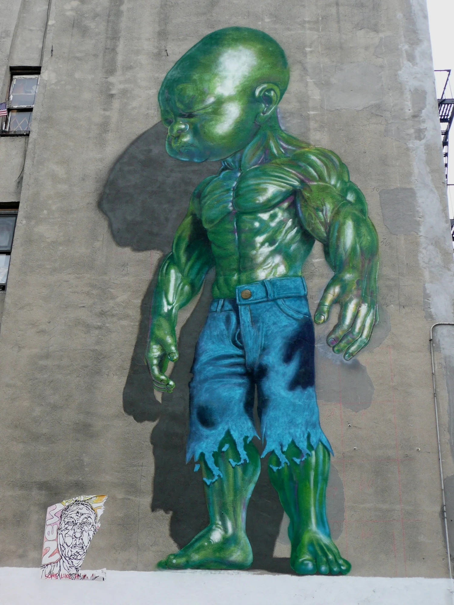

Temper Tot, Little Italy, 2012
Green Temper Tot mural installed on Mulberry Street in Manhattan as part of Vandalog’s Art of Comedy program during the New York Comedy Festival.

Work details
Description
Installed during the New York Comedy Festival as part of Vandalog’s Art of Comedy program, this green Temper Tot became one of the early anchor works of the L.I.S.A. Project’s curated mural initiative in Little Italy. Towering above Mulberry Street, the brooding baby Hulk introduced Ron English’s POPaganda imagery into one of Manhattan’s busiest pedestrian corridors.